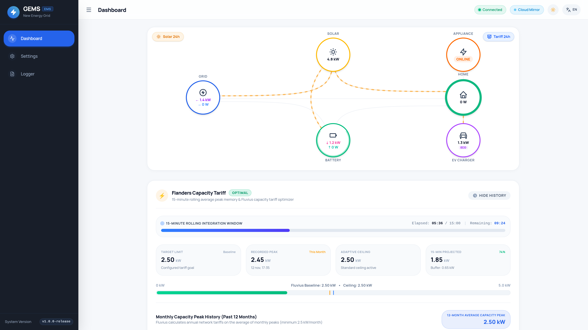
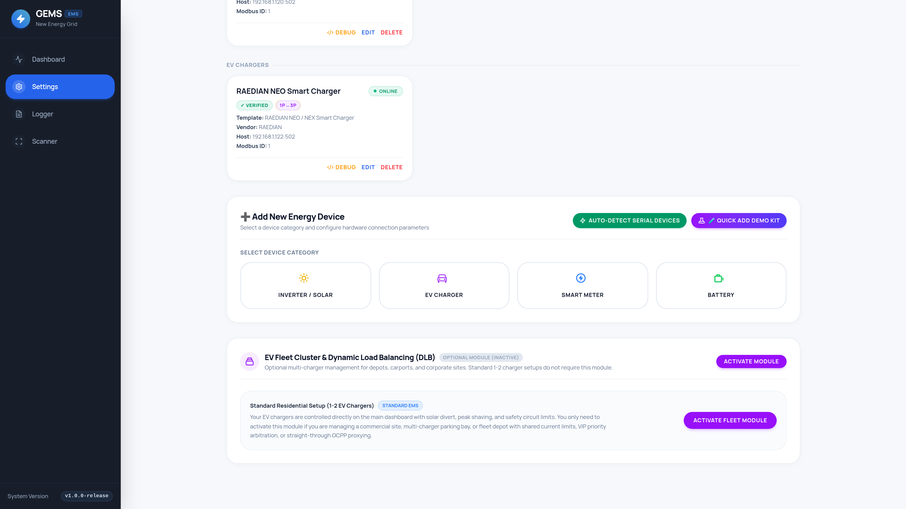
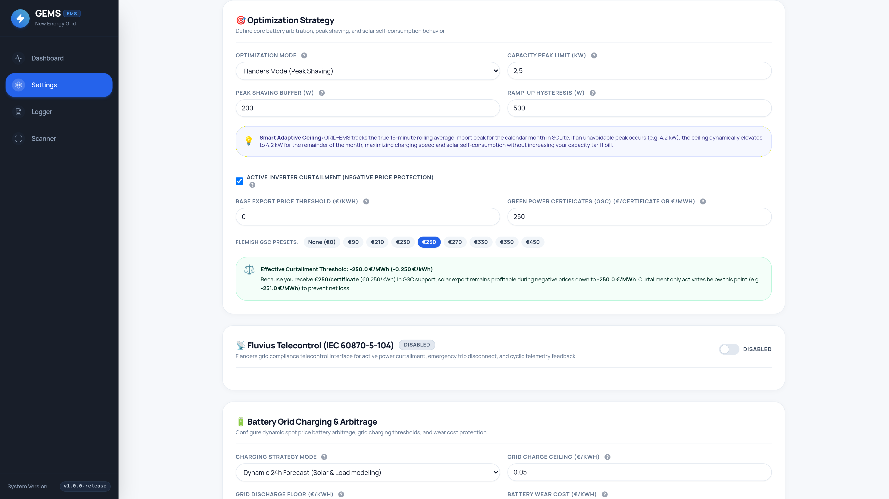
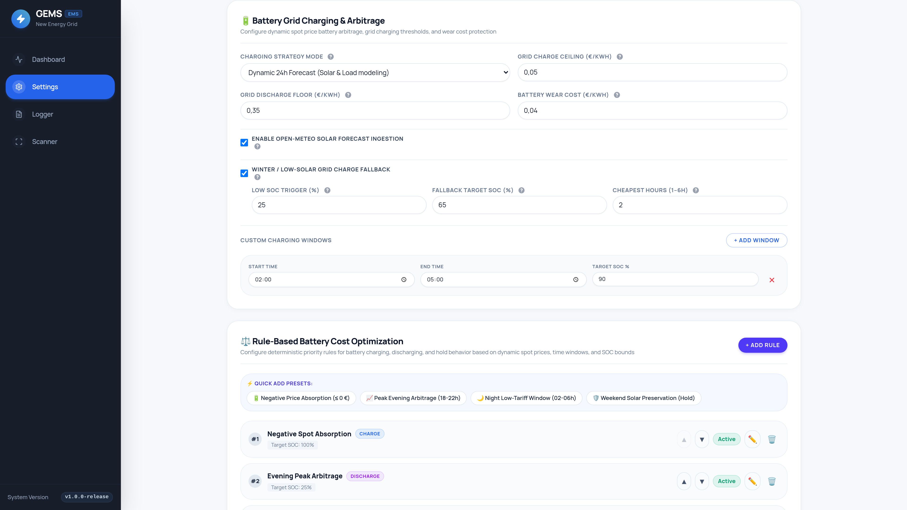

Solis Retrofit / Hybrid Inverters & Easyway 5200 (UNIV5200) Battery Guide
Complete electrician & homeowner manual covering physical DC power, CAN BMS & parallel DIP-switch wiring between the Easyway UNIV5200 (51.2V LiFePO4) battery and Solis Retrofit / Hybrid inverters, exact SolisCloud App settings, and optimal GRID-EMS (GEMS) configuration.

Section 1: Hardware Compatibility, Sizing & Voltage Guardrails
The Easyway 5200 Energy Storage Battery (UNIV5200) is a 51.2 V nominal (48V class) Low-Voltage Lithium Iron Phosphate (LiFePO4) module rated at 102 Ah (5.22 kWh total energy / ~4.70 kWh usable at 90% DoD). Before mounting or wiring hardware, verify strict voltage compatibility and pack-to-inverter power sizing.
- NEVER connect Easyway UNIV5200 modules in series! All multi-battery expansions (2 to 16 modules) must be wired strictly in 51.2 V DC parallel (`P+` to `P+`, `P-` to `P-`).
- NEVER connect UNIV5200 batteries to High-Voltage (`-H`) Solis inverters (such as
S6-EH3P(5-20)K-HorRHI-3P-HVES), which operate at160–600 Vdc. Always verify the-Lor48ES / 48Vsuffix on the Solis nameplate!
1.1 Easyway UNIV5200 Technical Specification Summary
| Parameter | UNIV5200 Specification | Parameter | UNIV5200 Specification |
|---|---|---|---|
| Cell Chemistry | 16S Prismatic LiFePO4 | Recommended Charge / Discharge | 50 A continuous (~2.56 kW / pack) |
| Nominal Voltage & Capacity | 51.2 Vdc • 102 Ah (5.22 kWh) |
Max Continuous / Peak Current | 100 A max (~5.12 kW) / Peak 10s |
| Operating Voltage Window | 44.8 Vdc – 57.6 Vdc |
Parallel Scalability | Up to 16 packs (83.52 kWh) |
| Recommended Depth of Discharge | 90 % DoD (10% floor SOC) |
Ingress, Cooling & Temp Range | IP20 indoor, passive; Charge 0–55 °C |
1.2 Compatible Solis LV Inverters & Recommended UNIV5200 Pack Sizing
Because each UNIV5200 BMS recommends 50 A continuous current (~2.56 kW per module), pairing a single 5.22 kWh pack with a 5 kW or 10 kW inverter causes the BMS to dynamically cap continuous charge/discharge around ~2.56 kW. Use the table below to match inverter power, minimum recommended packs, DC cable gauge, and external DC breaker rating:
| Solis LV Inverter Series | Type & GEMS Template | Max Battery Current | Recommended UNIV5200 Stack | Main DC Cable & Breaker |
|---|---|---|---|---|
| Solis RAI-3K-48ES-5G (3.0 kW, 1-Phase AC) |
AC Retrofit (No PV)solis_retrofit |
60 A (~3.0 kW) |
1 – 3× UNIV5200 (5.22 – 15.66 kWh) |
25 mm² copper100 A DC MCCB |
| Solis S6-EA1P(3.6–6)K-L (3.6 / 5.0 / 6.0 kW, 1-Phase AC) |
AC Retrofit (No PV)solis_retrofit |
75 A – 125 A |
2 – 4× UNIV5200 (10.44 – 20.88 kWh for full 5kW+) |
35 mm² copper125 A – 160 A DC MCCB |
| Solis S5-EH1P(3–6)K-L (3.0 – 6.0 kW, 1-Phase Hybrid) |
PV + Storage Hybridsolis_hybrid |
62.5 A – 100 A |
2 – 4× UNIV5200 (1× works up to ~2.56 kW cont.) |
25 – 35 mm² copper125 A DC MCCB |
| Solis S6-EH1P(3–8)K-L-PLUS/PRO (3.0 – 8.0 kW, 1-Phase Hybrid) |
PV + Storage Hybridsolis_hybrid |
70 A – 190 A |
2 – 6× UNIV5200 (≥3 packs for 8 kW continuous) |
35 – 50 mm² copper160 A – 250 A DC MCCB |
| Solis S6-EH3P(5–10)K-L & NV-YD-L (5.0 – 15.0 kW, 3-Phase LV Hybrid) |
3-Phase LV Hybridsolis_hybrid |
120 A – 290 A |
3 – 8× UNIV5200 (≥3 packs via DC Busbar) |
50 – 70 mm² (or dual 35 mm²)200 A – 300 A DC MCCB |
Section 2: Step-by-Step Wiring Manual — Easyway UNIV5200 to Solis Inverter
All wiring must be performed with the Solis AC breaker, PV DC isolator, external DC battery breaker, and all Easyway UNIV5200 pack switches strictly OFF. Because 51.2 V battery banks carry high DC currents (up to 100–250 A), meticulous lug crimping, equalized parallel cable paths, and exact RJ45 CAN pin matching are essential.
2.1 DC Power, Protective Earth & Parallel Balance Wiring
- Single UNIV5200 Module (5.22 kWh): Run equal-length
25 mm²(or35 mm²) fine-stranded flexible copper cables fromP+(Red) andP-(Black) through an external non-polarized 2-pole DC MCCB breaker (100 A – 125 A, rated≥ 80 Vdc; never use polarized AC breakers!) directly to the Solis inverterBAT+andBAT-terminals. - 2 to 3 Parallel UNIV5200 Modules (Diagonal / Cross-Takeoff Rule): Link
P+toP+andP-toP-between modules using identical-length bridge cables. Connect the main positive cable going to the Solis inverter onto Pack 1 (Master)P+, and connect the main negative cable going to the Solis inverter onto the LAST Pack'sP-(Pack 2 or Pack 3). This equalizes total loop resistance across every pack so Pack 1 does not age prematurely. - 4 to 16 Parallel UNIV5200 Modules (Copper Busbar Rule — Mandatory > 3 Packs): Do not daisy-chain high currents across 4+ battery terminals. Instead, install rated tin-plated Positive and Negative Copper DC Busbars (
250 A – 400 A). Run identical-length25 mm²fused branch cables from each individualUNIV5200to the busbars, then run main35 mm² – 70 mm²cables from the busbars through the main DC MCCB to the Solis inverter. - Terminal Torque & Protective Earth (
⏚ PE): Match your UNIV5200 hardware revision terminals (firmly click Amphenol SurLok Plus plugs until the lock tab latches, or torqueM6 / M8hydraulic hex lugs to5–8 Nmwith spring washers—never trap insulation under a lug!). Bond everyUNIV5200chassis ground screw (⏚) to the Solis PE bar using≥ 6 mm²green/yellow earth wire.
2.2 BMS CAN Cable Pinout (Master UNIV5200 to Solis BMS Port)
Closed-loop communication between the Master UNIV5200 and the Solis inverter uses 500 kbps CAN bus over a shielded CAT5e/CAT6 RJ45 cable plugged into the CAN port on Pack 1 (Master) and the BMS / CAN RJ45 port inside the Solis inverter.
| RJ45 Pin | T568B Wire Color | Solis BMS / CAN Port |
Easyway UNIV5200 CAN Port |
Cable Wiring Rule |
|---|---|---|---|---|
| Pin 1 – 3 | W-Orange / Orange / W-Green | NC / Enable GND / RS485-B | Reserved / Internal RS485 | Leave Disconnected* |
| Pin 4 | Solid Blue | CAN-H (CAN High) |
CAN-H (CAN High) |
Connect Pin 4 ↔ Pin 4 |
| Pin 5 | White / Blue | CAN-L (CAN Low) |
CAN-L (CAN Low) |
Connect Pin 5 ↔ Pin 5 |
| Pin 6 – 8 | Green / W-Brown / Brown | RS485-A / Pin 7: +12V Enable | Reserved / Internal Bus | Leave Disconnected* |
+12V Enable and Pins 3 & 6 carry RS-485 transceiver signals. While a standard T568B Ethernet cord aligns Pins 4 & 5, best electrician practice is to use the factory battery-to-inverter CAN cable or crimp a dedicated shielded CAT6 cable connecting only Pin 4 (CAN-H Blue) and Pin 5 (CAN-L White/Blue) (plus shield drain at the inverter end only) while leaving Pins 1–3 and 6–8 open so 12V never back-feeds into reserved BMS pins! (Always verify the enclosed Easyway UNIV5200 hardware leaflet in case a regional sub-revision shifts CAN pins).
2.3 Parallel Inter-Pack Link Wiring & Binary ADD DIP Switch Settings
When installing multiple UNIV5200 packs in parallel, daisy-chain standard straight-through CAT5e/CAT6 patch cables from Pack 1 (Master) RS485-B / Link Out → Pack 2 (Slave 1) RS485-A / Link In, and from Pack 2 Out → Pack 3 In down the stack. Leave the CAN port empty on all Slave packs—only Pack 1 (Master) connects to the Solis inverter!
Before turning any battery ON, set the front-panel ADD DIP switch block (`ON = 1 / UP`, `OFF = 0 / DOWN`, read left-to-right from Switch 1 to Switch 4; if your module has a 6-pole switch block, keep Switches 5 & 6 `OFF` unless the enclosed leaflet specifies bus termination on the final pack):
| UNIV5200 Pack Role | SW 1 | SW 2 | SW 3 | SW 4 | Binary Code | Notes |
|---|---|---|---|---|---|---|
| Single Pack / Master (Pack 1) | OFF |
OFF |
OFF |
OFF |
0000 | Connects CAN to Solis |
| Slave 1 (Pack 2 — 10.44 kWh) | ON |
OFF |
OFF |
OFF |
1000 |
Link from Pack 1 Out |
| Slave 2 (Pack 3 — 15.66 kWh) | OFF |
ON |
OFF |
OFF |
0100 |
Link from Pack 2 Out |
| Slave 3 (Pack 4 — 20.88 kWh) | ON |
ON |
OFF |
OFF |
1100 |
Link from Pack 3 Out |
| Slave 4 (Pack 5 — 26.10 kWh) | OFF |
OFF |
ON |
OFF |
0010 |
Use Copper DC Busbar |
| Slave 5 (Pack 6 — 31.32 kWh) | ON |
OFF |
ON |
OFF |
1010 |
Use Copper DC Busbar |
| Slaves 6 – 15 (Packs 7 – 16) | Continue binary sequence: Pack 7 = 0110, Pack 8 = 1110, Pack 9 = 0001 … Pack 16 = 1111 |
0110..1111 |
Up to 83.52 kWh total | |||
2.4 Grid Smart Meter Wiring (Especially Critical on Solis Retrofit Sites!)
Solis hybrid and retrofit inverters ship with an RS-485 smart meter (typically Acrel ACR10R-D16TE / ADL200 / ADL400 or Eastron SDM120CTM / SDM630MCT) wired into the Solis Meter port (on S6 RJ45 Meter cables: Pin 1 = RS485A Orange/White, Pin 2 = RS485B Orange).
- Retrofit Placement Rule (
RAI-3K/S6-EA1P): Clamp the Solis meter CTs directly on the main utility grid tails immediately after the DSO smart meter—upstream of your existing solar PV string inverter, house loads, EV wallbox, and the Solis Retrofit AC breaker! That way, whenever your existing rooftop solar inverter exports excess AC power toward the street, the Solis Retrofit immediately sees export and absorbs it into the EasywayUNIV5200batteries during autonomousSelf-Useoperation! - CT Direction & Phase Alignment: Ensure every CT arrow (
P1 → P2orK → L, verify arrow sticker on Acrel vs Eastron CTs!) points strictly in the manufacturer-indicated direction toward house loads, and verifyL1 / L2 / L3voltage sense wires matchCT1 / CT2 / CT3phase-for-phase.
2.5 Safe Pre-Charge Power-Up & Shutdown Sequence
- Verify Polarity Cold: With all batteries OFF, verify
BAT+andBAT-continuity and zero reverse polarity using a multimeter, and double-check allADDDIP switches. - Close DC Path While BMS Is Asleep: Switch individual
UNIV5200pack power/breaker rockers to ON (if equipped) and switch the external 2-pole DC MCCB breaker ON while the BMS LEDs are still off/standby. - Wake Master BMS (Soft Pre-Charge): Press and hold the
SW / POWERbutton on Pack 1 (Master) for2–3 secondsuntil the LEDs sweep and the greenRUNLED illuminates (parallel Slave packs wake automatically via the RS-485 link cable; confirm redALMLED is OFF on every pack and measure~51.2–53.5 Vdcat the Solis DC lugs). - Energize PV & AC Grid: Turn ON the Solis DC PV isolator (on hybrid models), then turn ON the Solis AC Grid breaker.
SW button 3s until all battery packs sleep → Switch External DC MCCB OFF.
Section 3: Connecting Solis to GEMS (RS-485 & LAN Stick Topologies)
To achieve fast, zero-cloud closed-loop battery dispatch and solar curtailment, connect your Solis inverter to GEMS over local Modbus RTU (RS-485) or local Modbus TCP. Choose one of the two verified topologies below:
| Connection Option | Physical Wiring & Pinout Details | Field Verdict |
|---|---|---|
| Option A (Best): Direct USB-to-RS485 or Industrial Ethernet Gateway |
|
Gold Standard Zero Wi-Fi jitter, deterministic 2–3s closed-loop control, and works independently of SolisCloud! |
Option B: Solis S2-WL-ST (Wi-Fi + LAN Stick) or DLS-L |
Plug an Ethernet RJ45 cable into the bottom of the S2-WL-ST dual Wi-Fi/LAN stick, reserve a static DHCP IP on your router, and connect GEMS via Modbus TCP on port 502 (Slave ID 1). |
Clean No-Cable LAN Supports simultaneous SolisCloud + single local Modbus TCP client on port 502 (poll every 5s). |
Legacy Cloud-Only S3-WiFi-ST Stick |
Entry-level Wi-Fi-only sticks manufactured strictly for outbound 5-minute SolisCloud pushes often disable raw Modbus TCP port 502 in recent firmware. |
Not Recommended Upgrade the stick to a wired S2-WL-ST or wire Option A (USB-RS485 / Ethernet RS-485 gateway). |
Section 4: Exact Settings in the SolisCloud App & Inverter HMI
Standard homeowner plant views in SolisCloud only display 5-minute charts. To configure battery BMS handshakes, storage modes, and grid-charging permissions, connect locally using SolisCloud Local Debugging (Bluetooth) or the inverter's front LCD panel.
4.1 Entering Local Commissioning in the SolisCloud App
- Stand within 3 meters of the Solis inverter with Bluetooth enabled on your smartphone.
- Open the SolisCloud App. On the login screen (or bottom tab bar under Me → More Tools), tap Local Operation / Local Debugging → Connect with Bluetooth.
- Select your inverter by its serial number, choose Installer, and authenticate using your authorized Solis Installer credentials (or on LCD-equipped S5/RAI models, go to Advanced Settings and enter the Solis Installer passcode from your commissioning card).
4.2 Complete Solis Parameter Checklist (SolisCloud Local Commissioning)
| SolisCloud Menu & Parameter | Required Setting | Why This Exact Setting Is Critical for UNIV5200 + GEMS |
|---|---|---|
Battery Type & Brand Profile |
Lithium Battery → PYLON LV (or Lithium Battery LV / AoBo) |
Establishes closed-loop 500 kbps CAN communication with the Easyway UNIV5200 BMS over Pins 4 & 5. Never select Lead-Acid or No Battery, and avoid profiles marked (RS485). Verify immediately under Information → BMS Info that status reads Normal with live SOC % and current limits! |
Overdischarge SOC |
10 % (Standard) 15 % – 20 % (With Backup Load) |
Matches Easyway UNIV5200's rated 90% Depth of Discharge. Stops household discharge smoothly at 10% SOC (or reserves 15–20% if critical loads are wired to the Solis AC-Backup port). |
Forcecharge SOC |
5 % Keep ≥5% below Overdischarge! |
Crucial Solis anti-bounce rule! If Forcecharge SOC is set too close to Overdischarge SOC (e.g. 9% vs 10%), natural 1% overnight BMS standby drift triggers loud, unwanted emergency AC grid recharges every night! Setting 10% / 5% eliminates bounce-charging completely. |
Max Charge / Discharge Current |
50 A × Pack Count (Capped at Inverter Max A) |
Set 50 A for 1× UNIV5200 (~2.56 kW), 100 A for 2× UNIV5200 (~5.12 kW), or inverter max (e.g. 125–190 A) for 3+ packs. GEMS also reads live BMS dynamic current limits every cycle. |
Work Mode |
Self-Use — ON Time of Charging (TOU) — OFF Feed-in Priority — OFF |
Sets autonomous solar self-consumption as the hardware baseline! Leave all 6 Solis internal Time-of-Use clock slots disabled (00:00–00:00) so internal timers never fight GEMS's real-time remote battery control. |
Allow Grid Charging (Battery Charge from Grid) |
Allow / Enable | Mandatory for dynamic spot tariffs & Winter Fallback! When Self-Use is active and TOU timers are OFF, enabling Allow Grid Charging will not charge from AC on its own—it simply grants hardware permission when GEMS commands cheap/negative grid charging. |
Meter Type & Placement |
Match hardware: Acrel 1P / 3P or Eastron Placement: Meter in Grid |
Ensures accurate grid import/export tracking for autonomous Self-Use fallback and live 3-phase current sensing. |
Backflow Power / Export Limit |
OFF (Unlimited) (Unless legally mandated by DSO) |
Keeping static EPM OFF allows profitable solar export and Flemish Green Certificates, while letting GEMS dynamically curtail hybrid PV down to 0 W only during negative-price hours! |
Slave Address & Baud Rate |
Address: 1 Baud: 9600 bps, 8N1 |
Matches GEMS default discovery and polling parameters. (Use 1, 2, 3... if daisy-chaining multiple Solis inverters on one RS-485 bus). |
Section 5: Onboarding Solis Hybrid vs. Solis Retrofit in GEMS
Open the GEMS web interface (https://gems.local or your controller's LAN IP), navigate to Settings, click the padlock icon 🔒 in the top-right header, and enter your Installer Access PIN to unlock Certified Installer Mode.
5.1 Picking the Right GEMS Template: Hybrid vs. AC-Coupled Retrofit
- Case 1 — Solis Hybrid Inverter with PV Strings + UNIV5200 (
S5-EH1P,S6-EH1P,S6-EH3P-L): Onboard under Inverter / Solar →Solis S5/S6 Hybrid Inverter(solis_hybrid). GEMS reads pure DC solar PV input power separately from AC inverter output so nighttime Easyway battery discharge never appears as false solar generation, and unlocks0.1%stepless PV curtailment! - Case 2 — Solis AC-Coupled Retrofit Inverter + UNIV5200 (
RAI-3K-48ES-5G,S6-EA1P-L) Alongside Existing PV:- Onboard your utility P1 Serial Meter (
p1_serial) under Smart Meter (recommended primary site billing reference). - Onboard your existing rooftop solar string inverter (e.g. Solis string, SMA, Huawei, Fronius, Enphase, etc.) under Inverter / Solar with
Battery Connected? = Unchecked. - Onboard the AC-coupled Solis unit under Battery Storage →
Solis Retrofit Storage System(solis_retrofit_battery) — or under Inverter / Solar →Solis Retrofit Inverter (AC Storage)(solis_retrofit). GEMS strictly sets PV string generation on the retrofit unit to0 Wwhile giving you full bidirectional EasywayUNIV5200peak shaving, solar surplus charging, and spot arbitrage!
- Onboard your utility P1 Serial Meter (


5.2 Field-by-Field GEMS Device Onboarding Reference
| GEMS Device Field | Recommended Value | Technical Purpose & Best Practice |
|---|---|---|
| Template | Solis S5/S6 Hybrid Inverter orSolis Retrofit Storage System |
Selects verified primary reference driver with 80 ms bus turnaround pacing, live BMS limit reader, and 60s volatile RC keepalive. |
| IP Address or Serial Port | /dev/serial/by-id/... (Option A)or Static IP of S2-WL-ST (Option B) |
Always click the green persistent /dev/serial/by-id/... pill when using USB-RS485 (`9600 bps`, `None` parity) so ports never swap across reboots. |
| TCP Port & Modbus ID | Port: 502 • Modbus ID: 1 |
Standard Modbus TCP port for S2-WL-ST and RS-485 Ethernet gateways; matches Solis Slave Address 1. |
| Rated Power (kW) | Exact Inverter AC Rating (e.g. 3.0, 3.6, 5.0, 6.0, 10.0) |
Used on Hybrid models to scale 0.1% active solar curtailment accurately and cap maximum dispatchable AC power. |
| Allow Curtailment | Checked (✓) on Hybrid PV Unchecked (☐) on AC Retrofit |
Enable on Solis Hybrid inverters (and on any separate solar inverter in Retrofit homes) to throttle PV during negative export hours. |
| Poll Interval (seconds) | 2 – 3 s (Direct RS-485 / Gateway) 5 s (S2-WL-ST LAN Stick) |
Direct RS-485 supports rapid 2–3s sub-cycle responsiveness; 5s keeps S2-WL-ST sticks completely congestion-free alongside SolisCloud. |
| Phase Wiring | Exact Phase: L1, L2, or L3 (1P)or L1-L2-L3 (3P S6-EH3P-L) |
Vital for 1-phase RAI / S6-EA1P / S6-EH1P on 3-phase homes! Identifies which exact domestic phase receives battery peak-shaving & fuse relief. |
| Grid Meter Connected? | Checked (✓) if Acrel/Eastron wired Unchecked (☐) if P1-only |
Check ✓ when the Solis Acrel/Eastron meter is wired to the inverter (even when a P1 meter is also onboarded in GEMS). |
| Battery Connected? & Capacity (kWh) | Checked (✓) + Exact Total kWh: 1× = 5.2 • 2× = 10.4 • 3× = 15.7 • 4× = 20.9 |
Drives GEMS's 24-hour dynamic arbitrage solver, SOC headroom balancing, and Winter Fallback charge duration calculations. |
Section 6: Optimizing GEMS Strategy for Solis & Easyway UNIV5200
6.1 Location, Solar Forecast & Grid Safety Limits (`Settings → Strategy`)
- Enable Open-Meteo Solar Forecast: Enter your installation street address under Geographic Location, click Lookup Lat/Lon, and ensure Enable Open-Meteo Solar Forecast Ingestion is Checked (✓) in the Battery card. GEMS will automatically hold off overnight grid charging when tomorrow's solar forecast is strong enough to fill your Easyway
UNIV5200stack for free! - Configure Main Breaker & Grid Topology: Set your exact main fuse rating (e.g.
25 A,32 A, or40 A) and switchboard topology (Single Phase 230V,Three Phase 400V, or BelgianThree Phase 230V Delta). Keep Meter Offline Fallback Current at0 A — Pause EV Charging.


6.2 Regional Optimization Recipes
🇧🇪 Recipe A: Flanders (Peak Shaving)
- Mode:
Flanders Mode (Peak Shaving) - Capacity Peak Limit:
2.5 kW(standard) or3.0–3.5 kW(heat pump + EV). Smart Adaptive Ceiling auto-raises if a higher monthly peak occurs. - Peak Shaving Buffer:
150 – 200 W - Active Curtailment:
Checked (✓), Base0.00 €/kWh - Flemish GSC Shield: Set
€0(modern PV) or exact certificate rate (e.g.€250–€450/MWh)—especially common on Solis Retrofit upgrades of legacy certificate-earning solar roofs!
🇳🇱 Recipe B: Netherlands (Saldering)
- Mode:
Netherlands Mode (Smart Saldering) - Active Curtailment:
Checked (✓) - Base Export Price Threshold:
0.00 €/kWh(or your supplier's feed-in levy threshold). - How It Works: Routes daytime PV surplus into Easyway
UNIV5200packs and EV charging first to avoid grid feed-in levies, then curtails PV smoothly once storage reaches 100% SOC during negative-return hours.
🌿 Recipe C: Fixed / Dual-Tariff Eco
- Mode:
Eco (Max Self-Consumption) - Active Curtailment:
Unchecked (☐)(unless on a contract with negative export charges). - Charging Strategy:
Price Threshold Only(-0.01 €/kWh) orSuper-Dal Onlyfor cheap off-peak night tariffs. - How It Works: Maximizes solar self-sufficiency and 8,000+ cycle LiFePO4 lifespan with zero unnecessary grid cycling.
6.3 Optimal UNIV5200 Arbitrage, Longevity & EV Coordination Settings
| GEMS Strategy Parameter | Optimal Value for UNIV5200 | Operational Benefit |
|---|---|---|
| Charging Strategy Mode | Dynamic 24h Forecast | Optimizes charge/discharge across 24h Day-Ahead tariffs, solar forecast, and 30-day Weekday/Weekend load profiles while respecting live UNIV5200 BMS limits. |
| Battery Wear Cost (€/kWh) | 0.04 €/kWh | Accounts for ~12–15% 48V AC-DC-AC round-trip conversion losses + LiFePO4 cycle wear so GEMS only executes grid arbitrage when net profit is genuinely positive. |
| Grid Charge Ceiling / Discharge Floor | Ceiling: 0.08 €/kWhFloor: 0.35 €/kWh |
Absorbs ultra-cheap or negative daytime/overnight grid power while reserving stored UNIV5200 energy for household peak consumption. |
| Winter / Low-Solar Grid Charge Fallback | Checked (✓)25% → 65% (2–3h) |
Automatically tops up UNIV5200 packs from ≤25% to 65% SOC during the 2–3 cheapest night hours in dark winter weather without exceeding your Flanders 15-min peak target! |
| Overnight EV Charging Protection (e.g. with Raedian Wallbox) |
Add Custom Battery Rule: Hold (Idle / No Export) |
Prevents a night EV boost session on your Raedian NEO / NEX / Gemini wallbox from draining the Easyway UNIV5200 battery—keeping 100% battery reserve for the morning household peak! |
Section 7: Hardware Safeguards, Handover Checklist & Troubleshooting
7.1 How GEMS Protects Solis Flash Memory & Easyway UNIV5200 Cells
- Zero-EEPROM-Wear Volatile Remote Control: Naive controllers repeatedly rewrite Solis's non-volatile storage mode flash register every few seconds, wearing out inverter EEPROM within a year. GEMS checks baseline storage permissions once and executes all real-time charge, discharge, and hold modulation exclusively via Solis's volatile RAM Remote Control registers with a 60-second watchdog keepalive—causing zero flash memory wear!
- Live BMS Dynamic Current Clamping: Cold winter utility rooms (< 10 °C) and high State-of-Charge (> 90% SOC) cause the Easyway
UNIV5200BMS to lower permissible charge current automatically. GEMS reads live BMS charge/discharge amp limits and pack voltage directly from the Solis inverter and clamps setpoints smoothly. - Periodic 100% LiFePO4 Top-Balancing: Because LiFePO4 cells have a very flat voltage curve between 20% and 90% SOC, allowing the UNIV5200 stack to reach
100% SOCfrom solar (or occasional cheap grid hours) at least once every 1–2 weeks keeps the BMS SOC coulomb counter razor-sharp across all parallel packs.
7.2 6-Point Post-Commissioning Handover Checklist
- BMS Handshake Verification: Confirm zero red
ALMLEDs on all EasywayUNIV5200packs and verify SolisBMS Infoshows Normal with expected total current limit (50 A × N packs). - GEMS Device Online & Debug Check: In Settings → Connected Devices, verify the Solis card shows ● Online. Click Debug and confirm accurate Voltage (~230 V), SOC %, and Battery/Grid watts.
- Kettle Load Polarity Test: Switch on a ~2 kW household appliance. Confirm Home Consumption rises by ~2 kW on the GEMS Dashboard and that Solis seamlessly ramps Easyway discharge to cover the load in
Eco / Self-Usemode. - Logger Cleanliness Check: Open the Logger tab for 2 minutes and verify clean polling with zero CRC errors, timeouts, or socket resets.
- Export JSON Backup: In Settings → System Info, click Export Configuration Backup (.json) for site documentation.
- Lock Certified Installer Mode: Click the padlock icon 🔒 in the Settings header so critical battery capacities, phase wiring, and fuse limits are protected.
7.3 Field Troubleshooting Matrix
| Observed Symptom | Probable Root Cause | Field Corrective Action |
|---|---|---|
Solis alarm CAN_Comm_FAIL or BatName-FAIL |
Wrong Battery Select profile, CAN cable plugged into Slave or RS485 port, or wrong RJ45 pinout. | Plug CAN cable strictly between Pack 1 (Master, ADD=0000) CAN port and Solis BMS port (Pin 4 CAN-H, Pin 5 CAN-L isolated). Select Lithium Battery → PYLON LV in SolisCloud. |
| Only 1 pack recognized in a 2–4 pack UNIV5200 stack | Duplicate ADD DIP switches, DIP changed while battery was ON, or inter-pack RS485 link swapped. |
Power all packs completely OFF, set unique binary ADD codes (0000, 1000, 0100...), verify RS485-B Out → RS485-A In daisy-chain, and cold-boot Pack 1 Master. |
| Battery charges briefly from grid every night at 10% SOC | Solis Forcecharge SOC set equal to or within 1–2% of Overdischarge SOC. |
In SolisCloud Battery Select, set Overdischarge SOC = 10% and lower Forcecharge SOC = 5% to leave a clean 5% hysteresis deadband. |
| 5 kW Solis inverter caps battery charge/discharge at ~2.55 kW | Only a single UNIV5200 pack is installed (single-pack BMS recommends 50 A × 51.2 V ≈ 2.56 kW). |
Normal single-pack BMS protection! Add a second parallel UNIV5200 pack (100 A ≈ 5.12 kW) if full 5 kW continuous charge/discharge is desired. |
| GEMS reads SOC %, but forced grid charging does not start | Allow Grid Charging disabled in SolisCloud, or conflicting Solis internal TOU schedule active. |
In SolisCloud Storage Mode Select, enable Self-Use, set Allow Grid Charging = Allow, and turn all internal Time of Charging slots OFF. |
Connection refused on port 502 with Wi-Fi stick |
Site uses a cloud-only S3-WiFi-ST stick instead of S2-WL-ST, or second client holds port 502. |
Connect GEMS via direct USB-RS485 / RS-485 Ethernet gateway (Option A) or replace stick with wired Ethernet S2-WL-ST. |
| Battery discharges to grid when house load turns ON | Acrel / Eastron CT clamp installed backwards or wired on wrong phase relative to voltage tap. | Verify CT arrow direction on main grid tail and confirm phase L1/L2/L3 voltage sense wires match CT1/CT2/CT3. |
| Nighttime battery discharge shows up as Solar PV on Retrofit | AC-coupled RAI-3K or S6-EA1P was onboarded using solis_hybrid instead of solis_retrofit. |
Edit the device in Settings → Devices and switch Template to Solis Retrofit Storage System (or Solis Retrofit Inverter). |
https://ems.newenergygrid.com) under Settings → Cloud Server for remote 24-hour forecast diagnostics, live BMS telemetry verification, and centralized multi-site management by New Energy Grid & The Charge Grid.